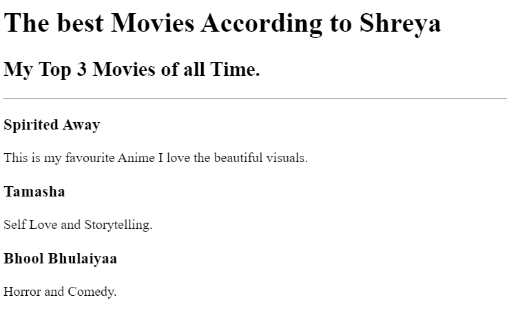

<!-- TODO 1: Create the HTML Boilerplate -->
<!DOCTYPE html>
<h1>Shreya Dakhale's Portfolio</h1>
<h2>I'm a Web Developer</h2>
<hr />
<!-- TODO 2: Add Your previous projects' HTML into the public folder -->
<!-- TODO 3: Take screenshots of your project previews and add the images to the images folder -->
<a href="../../2.4+Movie+Ranking+Project/2.4 Movie Ranking Project/index.html"
  >Movie Ranking Project</a
><br /><br />
<a href="../../2.4+Movie+Ranking+Project/2.4 Movie Ranking Project/index.html"
  ></a>
<hr />
<a
  href="../../3.4+Birthday+Invite+Project/3.4 Birthday Invite Project/index.html"
  >Birthday Invite Project</a
><br /><br />
<a
  href="../../3.4+Birthday+Invite+Project/3.4 Birthday Invite Project/index.html"
  ></a
><br />
<hr />
<a href="../../4.1+Webpages/public/about.html">About Me</a>
<a href="../../4.1+Webpages/public/contact.html">Contact Me</a>
<!-- TODO 4: Add titles/subtitles etc. -->

<!-- TODO 5: Add a link to the project pages -->

<!-- TODO 6: Add images to show the project previews
HINT for TODO 6: You can use the height attribute set to 200 to make the image smaller:
https://developer.mozilla.org/en-US/docs/Web/HTML/Element/img#attr-height -->

<!-- TODO 7: Add the Contact Me and About Me page links -->
